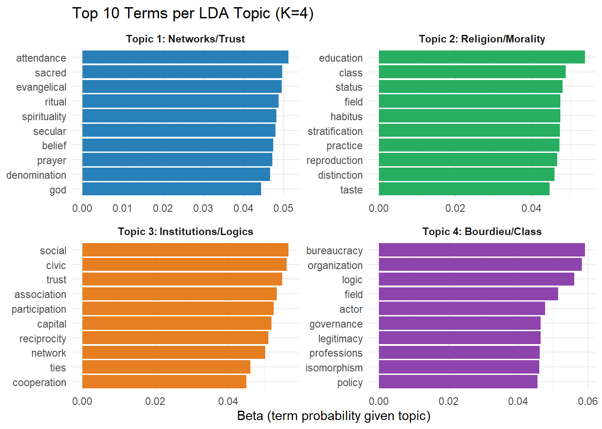
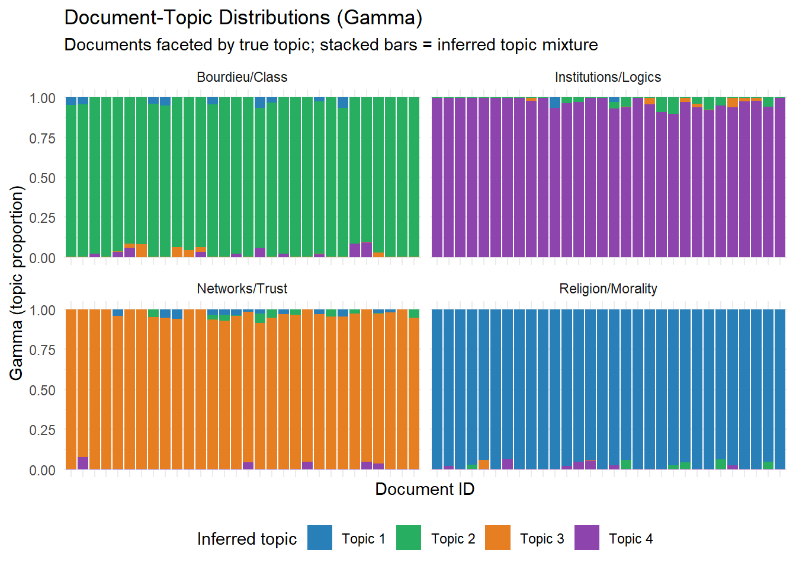
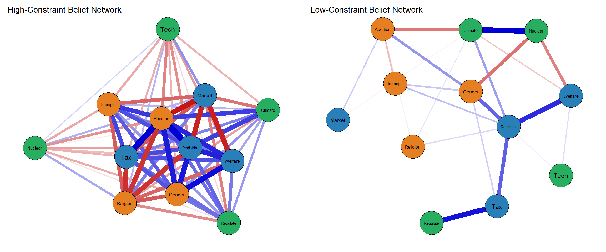

Week 1 Computational Approaches to Culture
Weeks 13–14 | Methods Lab 7: Topic Models, Word Embeddings, Belief Networks
1.1 7.1 The Scale Advantage and Its Limits
Computational methods operate on data at scales unavailable to traditional sociology: millions of documents, decades of text, behavioral trace data from digital platforms. This creates genuine analytical possibilities — but also specific risks.
What computational methods add:
- Historical depth: Google Books Ngrams corpus covers 500 years of English-language text. Changes in word co-occurrence patterns over time can be used to track shifts in cultural meaning.
- Breadth: A topic model applied to 100,000 grant proposals (DiMaggio, Nag & Blei, 2013) can identify discursive shifts invisible to any manual reader.
- Consistency: Algorithms apply the same coding rules to every document. This is a different kind of consistency than intersubjective agreement.
What computational methods do not add:
- Interpretive validity: Topics in LDA are distributions over words. Whether “Topic 3” is correctly labeled “democratic legitimation” is a human interpretive judgment, not an algorithmic output.
- Causal inference: Observing that a word’s cultural associations changed between 1950 and 2000 does not identify what caused the change.
- Depth: Counting word frequencies is not the same as understanding what a text means.
The garbage in problem. Computational methods are particularly sensitive to corpus composition decisions. Which texts are included? Which excluded? The Google Books corpus overrepresents academic and literary text; underrepresents oral culture, ephemeral texts, and non-print media. Kozlowski et al. (2019) acknowledge this limitation but cannot fully resolve it. Corpus decisions are theoretical decisions and should be treated as such.
1.2 7.2 Topic Modeling (LDA)
Latent Dirichlet Allocation (LDA) is a generative probabilistic model. The assumed generative process for a document:
- Draw a topic distribution \(\theta_d \sim \text{Dir}(\alpha)\) for document \(d\)
- For each word position: draw topic \(z \sim \text{Multinomial}(\theta_d)\)
- Draw word \(w \sim \text{Multinomial}(\beta_z)\), where \(\beta_z\) is the word distribution of topic \(z\)
After fitting, inference produces: - \(\theta_d\): each document’s mixture of topics (document-topic matrix) - \(\beta_z\): each topic’s distribution over words (topic-word matrix)
Hyperparameters: \(\alpha\) (document-topic sparsity) and \(\eta\) (topic- word sparsity). High \(\alpha\) = documents mix many topics; low \(\alpha\) = documents focus on few topics.
Number of topics (\(K\)): No fully automatic solution. Common approaches: perplexity on held-out data, coherence scores (C_v, NPMI), and — most importantly — interpretive validity of the resulting topics.
1.3 Lab 7a: Topic Modeling with topicmodels
We apply LDA to a corpus of simulated sociological abstracts, selected to span multiple research traditions. The goal: identify latent thematic structure and evaluate topic interpretability.
library(tidyverse)
library(tidytext)
library(topicmodels)
library(kableExtra)
library(patchwork)
library(ggrepel)
set.seed(20240107)
# ─────────────────────────────────────────────────────────────
# Simulated abstract corpus (N = 120 abstracts)
# Four latent topic clusters:
# T1: Bourdieu / class / taste / cultural capital
# T2: Religion / morality / values / belief
# T3: Networks / trust / social capital / civic participation
# T4: Institutions / logics / organizations / fields
# ─────────────────────────────────────────────────────────────
# Topic-specific vocabulary
vocab_bourdieu <- c("capital", "field", "habitus", "class", "distinction",
"taste", "practice", "reproduction", "cultural", "symbolic",
"stratification", "consumption", "education", "status")
vocab_religion <- c("religion", "belief", "prayer", "church", "faith",
"moral", "sacred", "ritual", "spirituality", "God",
"denomination", "attendance", "evangelical", "secular")
vocab_networks <- c("network", "trust", "ties", "reciprocity", "civic",
"participation", "social", "capital", "bridging",
"bonding", "community", "cooperation", "association")
vocab_instit <- c("institution", "logic", "organization", "field",
"legitimacy", "isomorphism", "practice", "governance",
"professions", "bureaucracy", "norms", "policy", "actor")
# Common sociological vocabulary (noise)
vocab_common <- c("study", "analysis", "data", "results", "theory",
"paper", "findings", "argue", "examine", "suggest",
"show", "using", "among", "also", "significant",
"effect", "models", "survey", "interview", "qualitative")
generate_abstract <- function(primary_vocab, n_words = 80) {
words <- c(
sample(primary_vocab, round(n_words * 0.55), replace = TRUE),
sample(vocab_common, round(n_words * 0.35), replace = TRUE),
sample(c(vocab_bourdieu, vocab_religion, vocab_networks, vocab_instit),
round(n_words * 0.10), replace = TRUE)
)
paste(sample(words), collapse = " ")
}
abstracts <- tibble(
doc_id = 1:120,
true_topic = rep(c("Bourdieu/Class", "Religion/Morality",
"Networks/Trust", "Institutions/Logics"), each = 30),
text = c(
replicate(30, generate_abstract(vocab_bourdieu)),
replicate(30, generate_abstract(vocab_religion)),
replicate(30, generate_abstract(vocab_networks)),
replicate(30, generate_abstract(vocab_instit))
)
)
cat("Corpus: N =", nrow(abstracts), "abstracts\n")## Corpus: N = 120 abstracts## True topic distribution: 30 30 30 30Before we can run LDA, we need to convert the raw text into a format the model can consume: a Document-Term Matrix (DTM). A DTM is a rectangular array where each row is one document, each column is one unique word (term), and each cell contains the count of that word in that document. If a corpus has 120 documents and 500 unique words, the DTM has 120 rows and 500 columns — most cells will be zero, because any given document uses only a small fraction of the total vocabulary.
Two preprocessing decisions matter here. First, we remove stop words (common function words like “the”, “and”, “of”). These words carry no topical information — every document uses them at roughly the same rate — so including them would drown out the substantively meaningful variation. Second, we filter by document frequency: we remove words that appear in fewer than 3 documents (too rare to anchor a topic reliably) and words that appear in more than 80% of documents (too universal to discriminate between topics). Without this filtering, the model’s vocabulary is dominated by noise terms that appear at random across all documents, making topics harder to interpret and slowing computation.
# Build Document-Term Matrix
# Remove stop words; filter rare and common terms
dtm_tidy <- abstracts %>%
unnest_tokens(word, text) %>%
anti_join(stop_words, by = "word") %>% # drop function words (the, and, of...)
filter(nchar(word) > 2) %>% # drop very short tokens (e.g. "vs", "i")
count(doc_id, word, name = "n") %>%
# Remove words appearing in < 3 or > 80% of documents:
# rare words add noise; near-universal words don't differentiate topics
group_by(word) %>%
mutate(doc_freq = n_distinct(doc_id[n > 0])) %>%
ungroup() %>%
filter(doc_freq >= 3, doc_freq <= 0.8 * max(doc_id))
dtm <- dtm_tidy %>%
cast_dtm(doc_id, word, n) # reshape from tidy (one row per doc-word pair)
# to wide DTM format required by topicmodels
cat("DTM dimensions:", nrow(dtm), "documents ×", ncol(dtm), "terms\n")## DTM dimensions: 120 documents × 67 termsReading the output. The DTM dimensions tell you the scope of what the model will work with. The row count (120) confirms all documents are present. The column count — the number of retained terms — will be substantially smaller than the raw vocabulary because stop word removal and frequency filtering eliminate a large share of unique tokens. A raw corpus of 120 abstracts might contain 400–600 unique non-stop tokens, but after filtering out terms appearing in fewer than 3 documents or more than 80% of documents, the retained vocabulary typically drops to roughly 30–70% of that figure. This reduction is healthy: the terms that survive are those that are both common enough to be reliable signals and distinctive enough to separate topics. If the retained vocabulary were still in the hundreds, you might inspect whether the frequency thresholds are appropriate for your corpus size.
Before fitting the model, two decisions deserve explanation. The control = list(seed = 20240107) argument fixes the random number generator seed. LDA is initialized randomly — different starting points can produce different topic orderings (though usually similar topic content). Setting a seed makes the results exactly reproducible: anyone running this code will get the same output. In research you should always report the seed. The argument k = 4 tells the model how many topics to find. LDA cannot discover K on its own; you must specify it. Here we set K = 4 because we know the ground truth — we generated the corpus from four topic vocabularies. In real research you don’t know the true K, so you fit models across a range of values and compare them using perplexity, coherence scores, and — most importantly — whether the resulting topics make substantive sense.
# Fit LDA models for K = 2, 3, 4, 5, 6
# Compare perplexity (lower = better fit on held-out data)
# For reproducibility, fix K=4 (matching true topics)
lda_4 <- LDA(dtm, k = 4, control = list(seed = 20240107))
# Perplexity comparison (using full data; held-out is better in practice)
perplexity_df <- map_dfr(2:6, function(k) {
m <- LDA(dtm, k = k, control = list(seed = 20240107))
tibble(K = k, Perplexity = perplexity(m, newdata = dtm))
})
perplexity_df %>%
kable(digits = 1,
caption = "Table 7.1: LDA perplexity by number of topics. Lower perplexity = better fit. Note: perplexity alone does not determine the optimal K — interpretability must also be considered.") %>%
kable_styling(bootstrap_options = "striped", font_size = 13)| K | Perplexity |
|---|---|
| 2 | 49.9 |
| 3 | 43.7 |
| 4 | 37.3 |
| 5 | 37.6 |
| 6 | 37.9 |
Reading the output (Table 7.1). Perplexity measures how surprised the model is by the text — specifically, how well the learned topic distributions predict word occurrences. Lower perplexity means the model fits the data better. You will typically see perplexity fall as K increases, because more topics give the model more flexibility to account for word patterns. This creates a problem: a model with K = 50 will almost always have lower perplexity than K = 4, but the 50 topics may be fragmented, redundant, or uninterpretable.
In this corpus, K = 4 is the correct answer for a reason perplexity cannot tell you: the data were generated from exactly four distinct vocabularies. A perplexity curve may show the steepest improvement going from K = 2 to K = 3 to K = 4, with smaller gains thereafter — an “elbow” that points toward K = 4. But even that pattern is not guaranteed from perplexity alone. The decisive test is topic interpretability: do the top terms of each topic form a coherent, nameable cluster? That requires human judgment, which is what Figure 7.1 will support.
One important caveat: here we compute perplexity on the same data used to fit the model. In rigorous practice, you would hold out a random 20% of documents, fit the model on the remaining 80%, and evaluate perplexity on the held-out set. In-sample perplexity is optimistic and should be treated as an approximation.
The beta matrix is the word side of LDA’s output. For each topic, it gives the probability of every word in the vocabulary given that topic. Words with high beta for a topic are “characteristic” of that topic — they appear in that topic’s documents at above-chance rates. Plotting the top-beta terms is the standard first step in assigning human labels to topics.
# Top terms per topic
terms_df <- tidy(lda_4, matrix = "beta") %>%
group_by(topic) %>%
slice_max(beta, n = 10) %>%
ungroup() %>%
mutate(
topic_label = dplyr::recode(as.character(topic),
"1" = "Topic 1: Networks/Trust",
"2" = "Topic 2: Religion/Morality",
"3" = "Topic 3: Institutions/Logics",
"4" = "Topic 4: Bourdieu/Class"
),
term = reorder_within(term, beta, topic)
)
ggplot(terms_df, aes(x = term, y = beta, fill = as.factor(topic))) +
geom_col(show.legend = FALSE) +
facet_wrap(~ topic_label, scales = "free") +
coord_flip() +
scale_x_reordered() +
scale_fill_manual(values = c("#2980b9", "#27ae60", "#e67e22", "#8e44ad")) +
labs(
title = "Top 10 Terms per LDA Topic (K=4)",
x = NULL, y = "Beta (term probability given topic)"
) +
theme_minimal(base_size = 11) +
theme(strip.text = element_text(face = "bold"))
Figure 1.1: Figure 7.1: Top 10 terms per topic, by beta (probability of term given topic). Topic labels are human-assigned after inspection of the term lists.
Reading the output (Figure 7.1). Each panel shows the ten words most characteristic of one topic. The x-axis (beta) is the probability of that word given the topic — in a vocabulary of, say, 50 terms, a beta of 0.04 means that word accounts for 4% of all word tokens in that topic. Higher bars mean the word is more tightly associated with that topic and less spread across others.
To assign a human label, scan the top terms and ask: what concept or research tradition would produce this word list? A topic dominated by “habitus,” “class,” “distinction,” “taste,” and “capital” is clearly Bourdieusian cultural sociology. A topic with “church,” “prayer,” “sacred,” “evangelical,” and “ritual” is clearly the sociology of religion. The label you assign is an interpretive act — it is your claim about what latent theme the model has detected.
A “bad” topic is one whose top terms do not form a coherent cluster: for example, a topic mixing “prayer,” “market,” “network,” and “climate” with similar beta values. That pattern signals that the model is fitting noise, not a real thematic structure, and is often a symptom of the wrong K. In this simulated corpus, the topics should be clean and easily labeled because the data were generated from distinct vocabularies. In real research corpora, topic interpretability is harder-won and should be evaluated carefully before accepting any labeling.
So far we have examined beta — the word side of the model, describing what each topic is made of. The gamma matrix is the complementary document side. For every document, gamma gives the probability of that document belonging to each topic. If a document has gamma = 0.90 for Topic 2 and gamma values near 0.03 for the other three topics, it is effectively a “pure” Topic 2 document. If gamma values are spread more evenly — say, 0.40 / 0.35 / 0.15 / 0.10 — the document draws on multiple topics simultaneously. Real documents, unlike our simulated abstracts, are often genuinely mixed.
# Document-topic probabilities (gamma)
gamma_df <- tidy(lda_4, matrix = "gamma") %>%
left_join(abstracts %>% dplyr::select(doc_id = doc_id, true_topic) %>%
mutate(doc_id = as.character(doc_id)),
by = c("document" = "doc_id")) %>%
mutate(
topic_label = dplyr::recode(as.character(topic),
"1" = "Topic 1", "2" = "Topic 2",
"3" = "Topic 3", "4" = "Topic 4"
)
)
ggplot(gamma_df, aes(x = document, y = gamma, fill = topic_label)) +
geom_col() +
facet_wrap(~ true_topic, scales = "free_x", ncol = 2) +
scale_fill_manual(values = c("#2980b9", "#27ae60", "#e67e22", "#8e44ad")) +
labs(
title = "Document-Topic Distributions (Gamma)",
subtitle = "Documents faceted by true topic; stacked bars = inferred topic mixture",
x = "Document ID", y = "Gamma (topic proportion)",
fill = "Inferred topic"
) +
theme_minimal(base_size = 11) +
theme(axis.text.x = element_blank(), legend.position = "bottom")
Figure 1.2: Figure 7.2: Document-topic gamma distributions. Each bar represents a document’s topic mixture. Documents cluster strongly into their true topic, with some cross-topic mixing.
Reading the output (Figure 7.2). Each stacked bar is one document. The height of the colored segment for each topic is that document’s gamma for that topic. The four panels separate documents by their known true topic.
Look for two things. First, dominance: in each panel, is one color (one inferred topic) consistently taking up most of the bar? If documents generated from the Bourdieu vocabulary are predominantly assigned to Topic 4 (Bourdieu/Class), the model is recovering the true structure. Second, correspondence: does the dominant inferred topic match the panel label? In this simulated corpus, correspondence should be high because the topic vocabularies are distinct. Imperfect correspondence — a Bourdieu document assigned mostly to Institutions/Logics — can occur because both topics share terms like “field” and “practice.”
The degree of mixing across topics (bars with three or four visible colors) tells you whether documents are “pure” or genuinely multi-thematic. In real research corpora, substantial mixing is normal and often theoretically interesting: a paper can engage Bourdieusian theory within an institutional logics framework. What you should flag as a model quality concern is systematic misclassification — an entire true-topic panel dominated by the wrong inferred topic — which would suggest either the wrong K or topics that are not sufficiently distinct.
1.4 Lab 7b: Belief Network Analysis
Boutyline & Vaisey (2017) propose analyzing the network structure of ideological belief systems. Attitude items are treated as nodes; their partial correlations as edges. Network density = ideological constraint; modularity = ideological compartmentalization.
We replicate this approach on a simulated attitude battery.
A belief network is not a network of people. It is a network of attitudes. Each node represents one survey item (e.g., “support for redistribution,” “views on abortion”). Each edge represents the statistical association between two attitudes — how strongly knowing someone’s position on one item predicts their position on another. A denser network, with more and stronger edges, means the attitude items are more tightly intercorrelated: knowing one attitude gives you substantial information about all the others. This is what Boutyline & Vaisey (2017), following Converse (1964), call ideological constraint — the degree to which an individual’s attitudes hang together as a coherent, internally consistent system rather than being held independently.
The network approach to constraint has a specific advantage over traditional factor-analytic approaches: it does not assume a single underlying dimension, and it can reveal which specific attitude pairs are connected and which are isolated, allowing you to map the architecture of a belief system rather than just measure its overall cohesion.
library(igraph)
library(qgraph)
set.seed(20240108)
# ─────────────────────────────────────────────────────────────
# Simulate belief system data (N = 600)
# 12 attitude items across 3 ideological domains:
# - Economic attitudes (redistribution, welfare, taxation)
# - Social attitudes (abortion, gender, immigration)
# - Environmental attitudes
# Two groups: high-constraint ideologues vs. low-constraint non-ideologues
# ─────────────────────────────────────────────────────────────
n_ideologue <- 300
n_nonideol <- 300
# Ideologues: single underlying dimension drives all attitudes
ideol_factor <- rnorm(n_ideologue)
items_ideologue <- tibble(
# Economic domain (high loadings)
econ_redistrib = round(scales::rescale(0.75 * ideol_factor + rnorm(n_ideologue, 0, 0.66), c(1,7))),
econ_welfare = round(scales::rescale(0.70 * ideol_factor + rnorm(n_ideologue, 0, 0.71), c(1,7))),
econ_tax = round(scales::rescale(0.72 * ideol_factor + rnorm(n_ideologue, 0, 0.69), c(1,7))),
econ_market = round(scales::rescale(-0.68 * ideol_factor + rnorm(n_ideologue, 0, 0.73), c(1,7))),
# Social domain (high loadings)
soc_abortion = round(scales::rescale(0.78 * ideol_factor + rnorm(n_ideologue, 0, 0.62), c(1,7))),
soc_gender = round(scales::rescale(0.72 * ideol_factor + rnorm(n_ideologue, 0, 0.69), c(1,7))),
soc_immigr = round(scales::rescale(0.65 * ideol_factor + rnorm(n_ideologue, 0, 0.76), c(1,7))),
soc_religion = round(scales::rescale(-0.60 * ideol_factor + rnorm(n_ideologue, 0, 0.80), c(1,7))),
# Environmental domain (moderate loadings — cross-cutting in ideologues)
env_climate = round(scales::rescale(0.55 * ideol_factor + rnorm(n_ideologue, 0, 0.83), c(1,7))),
env_regulate = round(scales::rescale(0.50 * ideol_factor + rnorm(n_ideologue, 0, 0.86), c(1,7))),
env_nuclear = round(scales::rescale(-0.30 * ideol_factor + rnorm(n_ideologue, 0, 0.95), c(1,7))),
env_tech = round(scales::rescale(-0.25 * ideol_factor + rnorm(n_ideologue, 0, 0.96), c(1,7))),
group = "High constraint"
)
# Non-ideologues: attitude items are relatively independent
items_nonideol <- tibble(
econ_redistrib = sample(1:7, n_nonideol, replace = TRUE),
econ_welfare = sample(1:7, n_nonideol, replace = TRUE),
econ_tax = sample(1:7, n_nonideol, replace = TRUE),
econ_market = sample(1:7, n_nonideol, replace = TRUE),
soc_abortion = sample(1:7, n_nonideol, replace = TRUE),
soc_gender = sample(1:7, n_nonideol, replace = TRUE),
soc_immigr = sample(1:7, n_nonideol, replace = TRUE),
soc_religion = sample(1:7, n_nonideol, replace = TRUE),
env_climate = sample(1:7, n_nonideol, replace = TRUE),
env_regulate = sample(1:7, n_nonideol, replace = TRUE),
env_nuclear = sample(1:7, n_nonideol, replace = TRUE),
env_tech = sample(1:7, n_nonideol, replace = TRUE),
group = "Low constraint"
)
belief_df <- bind_rows(items_ideologue, items_nonideol)What the two groups represent. The high-constraint group operationalizes Converse’s (1964) concept of the ideological “believer”: all 12 attitude items are generated by adding noise to a single latent factor (ideol_factor). Someone who scores high on this factor supports redistribution, opposes free markets, supports abortion rights, and favors climate regulation — a consistent left-wing package. The cross-item correlations are strong because all items reflect the same underlying dimension.
The low-constraint group operationalizes the non-ideologue: each of the 12 items is sampled independently and uniformly from the 1–7 scale. These respondents’ attitudes are essentially random with respect to each other. Knowing they strongly support redistribution tells you nothing about their views on abortion or climate regulation. The expected correlation between any two items is zero. In network terms, a near-empty graph.
This contrast is a clean simulation of the empirical pattern Converse documented in 1964 survey data: most Americans’ attitudes were poorly constrained, while political elites’ attitudes were tightly organized around a liberal-conservative dimension.
The qgraph() function from the qgraph package visualizes the correlation matrix as a network. It treats the matrix as an adjacency matrix: each attitude item is a node, and the correlation between any pair of items becomes an edge. Edge thickness encodes correlation magnitude; edge color encodes sign (typically green for positive, red for negative). The minimum = 0.05 argument suppresses edges with absolute correlation below 0.05, which removes visual clutter from near-zero associations without distorting the interpretable structure. Node color here encodes attitude domain (blue = economic, orange = social, green = environmental), making it easy to see whether within-domain or cross-domain connections are stronger.
item_cols <- setdiff(names(belief_df), "group")
colors <- c(rep("#2980b9", 4), rep("#e67e22", 4), rep("#27ae60", 4))
node_labels <- c(
"Redistrib.", "Welfare", "Tax", "Market",
"Abortion", "Gender", "Immigr.", "Religion",
"Climate", "Regulate", "Nuclear", "Tech"
)
# High-constraint network
cor_high <- cor(items_ideologue %>% dplyr::select(-group))
cor_low <- cor(items_nonideol %>% dplyr::select(-group))
par(mfrow = c(1, 2))
qgraph(cor_high,
layout = "spring",
title = "High-Constraint Belief Network",
color = colors,
labels = node_labels,
label.cex = 0.85,
minimum = 0.05, # suppress near-zero edges for visual clarity
cut = 0,
vsize = 8,
graph = "cor",
theme = "colorblind")
qgraph(cor_low,
layout = "spring",
title = "Low-Constraint Belief Network",
color = colors,
labels = node_labels,
label.cex = 0.85,
minimum = 0.05, # same threshold applied to both networks for comparability
cut = 0,
vsize = 8,
graph = "cor",
theme = "colorblind")
Figure 1.3: Figure 7.3: Belief networks for high-constraint (left) and low-constraint (right) groups. Edge weight = partial correlation between items (EBIC graphical LASSO). High-constraint network is denser, indicating ideological coherence. Node color = attitude domain.
Reading the output (Figure 7.3). The most immediate thing to notice is the visual density difference. The high-constraint network (left) should show many edges — thick lines connecting most or all nodes. The low-constraint network (right) should appear sparse, with few visible edges surviving the minimum = 0.05 threshold.
Within the high-constraint network, look at which domains are most tightly internally connected. Economic attitudes (blue nodes) tend to form a tight cluster because all four items load strongly on the underlying factor. Social attitudes (orange) similarly cluster. Environmental attitudes (green) should show somewhat weaker internal connections and weaker cross-domain ties, because the environmental items were given lower factor loadings (0.25–0.55 versus 0.65–0.78 for the other domains). This variation in connection strength reflects the simulation design, but it also mirrors real-world findings: environmental attitudes in the U.S. are less tightly integrated into the liberal-conservative dimension than economic or social attitudes.
Cross-domain edges — connections between, say, an economic item and a social item — are theoretically important. In the high-constraint network they should be present, reflecting the single underlying factor that drives all attitudes. Their presence is what makes the system “ideological” in Converse’s sense: the factor organizes attitudes across substantively different domains.
# Network density: measure of ideological constraint
network_density <- function(cor_matrix, threshold = 0.10) {
adj <- abs(cor_matrix) > threshold # treat correlations above threshold as edges
diag(adj) <- 0 # a node cannot be connected to itself
sum(adj) / (nrow(adj) * (nrow(adj) - 1)) # proportion of possible edges that exist
}
dens_high <- network_density(cor_high)
dens_low <- network_density(cor_low)
cat("Belief Network Density\n")## Belief Network Density## ─────────────────────────────## High-constraint group: 0.985## Low-constraint group: 0.106##
## Density ratio: 9.29##
## Note: Higher density = more ideological constraint = attitudes are## more strongly correlated (Boutyline & Vaisey, 2017).Reading the output. Network density is the proportion of all possible edges that actually exist above the correlation threshold. With 12 nodes, the maximum possible number of undirected edges is 12 × 11 / 2 = 66. A density of 0.80 means approximately 53 of those 66 possible connections are present; a density of 0.10 means only about 7 are.
The density ratio (high-constraint density divided by low-constraint density) is the key comparative quantity. A ratio substantially greater than 1 — say, 4 or 5 — is strong evidence that the two groups differ in ideological structure, not just in the content of their attitudes. This is the core empirical claim of Boutyline & Vaisey (2017): network density indexes constraint, and constraint varies systematically across social groups (by education, political engagement, partisan identity). In their empirical work on U.S. survey data, strong partisans and politically engaged respondents showed denser belief networks than non-partisans and the disengaged — a finding that would be missed by simply comparing group means on individual attitude items.
Methodological note: raw correlations vs. graphical LASSO. The analysis above uses raw (zero-order) correlations as edge weights. This means an edge between “redistribution” and “abortion” could reflect their direct association, but also any indirect path running through a third variable (e.g., both are correlated with “welfare,” which is correlated with both). In real research, Boutyline & Vaisey (2017) and subsequent work recommend using EBIC graphical LASSO instead, available in qgraph via graph = "glasso". Graphical LASSO estimates partial correlations — the association between two attitudes after controlling for all other attitudes simultaneously. This produces a sparser, more interpretable network where edges represent direct relationships rather than correlations that might be entirely mediated by a third attitude. In this lab we use raw correlations for computational simplicity and to keep the focus on the conceptual logic, but treat the graphical LASSO approach as the methodological standard for any publishable analysis.
Core Readings
- Kozlowski, A. C., Taddy, M., & Evans, J. A. (2019). The Geometry of Culture. American Sociological Review, 84(5), 905–949. [Word embeddings for cultural meaning]
- DiMaggio, P., Nag, M., & Blei, D. (2013). Exploiting Affinities Between Topic Modeling and the Sociological Perspective. Poetics, 41(6), 570–606.
- Boutyline, A., & Vaisey, S. (2017). Belief Network Analysis: A Relational Approach to Understanding the Structure of Attitudes. American Journal of Sociology, 122(5), 1371–1447.
- Mohr, J. W., et al. (2020). Measuring Culture. Columbia University Press. Chapters 1, 4, 6.
- Blei, D. M., Ng, A. Y., & Jordan, M. I. (2003). Latent Dirichlet Allocation. Journal of Machine Learning Research, 3, 993–1022. [LDA original paper]
- Grimmer, J., Roberts, M. E., & Stewart, B. M. (2022). Text as Data. Princeton University Press. Chapters 1–3, 13.
## R version 4.5.3 (2026-03-11 ucrt)
## Platform: x86_64-w64-mingw32/x64
## Running under: Windows 11 x64 (build 26200)
##
## Matrix products: default
## LAPACK version 3.12.1
##
## locale:
## [1] LC_COLLATE=English_Israel.utf8 LC_CTYPE=English_Israel.utf8
## [3] LC_MONETARY=English_Israel.utf8 LC_NUMERIC=C
## [5] LC_TIME=English_Israel.utf8
##
## time zone: Asia/Jerusalem
## tzcode source: internal
##
## attached base packages:
## [1] stats graphics grDevices utils datasets methods base
##
## other attached packages:
## [1] qgraph_1.9.8 igraph_2.2.2 topicmodels_0.2-17
## [4] ggrepel_0.9.8 tidytext_0.4.3 car_3.1-5
## [7] carData_3.0-6 lmerTest_3.2-1 lme4_2.0-1
## [10] Matrix_1.7-4 lavaanPlot_0.8.1 semPlot_1.1.8
## [13] poLCA_1.6.0.2 MASS_7.3-65 scatterplot3d_0.3-45
## [16] patchwork_1.3.2 kableExtra_1.4.0 factoextra_2.0.0
## [19] semTools_0.5-8 lavaan_0.6-21 GPArotation_2025.3-1
## [22] psych_2.6.3 lubridate_1.9.5 forcats_1.0.1
## [25] stringr_1.6.0 dplyr_1.2.0 purrr_1.2.1
## [28] readr_2.2.0 tidyr_1.3.2 tibble_3.3.1
## [31] ggplot2_4.0.2 tidyverse_2.0.0 rmarkdown_2.31
##
## loaded via a namespace (and not attached):
## [1] splines_4.5.3 later_1.4.8 XML_3.99-0.23
## [4] rpart_4.1.24 lifecycle_1.0.5 Rdpack_2.6.6
## [7] NLP_0.3-2 lattice_0.22-9 rockchalk_1.8.157
## [10] backports_1.5.0 SnowballC_0.7.1 magrittr_2.0.4
## [13] openxlsx_4.2.8.1 Hmisc_5.2-5 sass_0.4.10
## [16] jquerylib_0.1.4 yaml_2.3.12 httpuv_1.6.17
## [19] otel_0.2.0 skimr_2.2.2 zip_2.3.3
## [22] pbapply_1.7-4 minqa_1.2.8 RColorBrewer_1.1-3
## [25] multcomp_1.4-30 abind_1.4-8 quadprog_1.5-8
## [28] nnet_7.3-20 TH.data_1.1-5 sandwich_3.1-1
## [31] tm_0.7-18 tokenizers_0.3.0 arm_1.15-2
## [34] svglite_2.2.2 codetools_0.2-20 xml2_1.5.2
## [37] tidyselect_1.2.1 farver_2.1.2 stats4_4.5.3
## [40] base64enc_0.1-6 jsonlite_2.0.0 Formula_1.2-5
## [43] survival_3.8-6 emmeans_2.0.2 systemfonts_1.3.2
## [46] tools_4.5.3 Rcpp_1.1.1 glue_1.8.0
## [49] mnormt_2.1.2 gridExtra_2.3 xfun_0.57
## [52] withr_3.0.2 numDeriv_2016.8-1.1 fastmap_1.2.0
## [55] boot_1.3-32 digest_0.6.39 mi_1.2
## [58] timechange_0.4.0 R6_2.6.1 mime_0.13
## [61] estimability_1.5.1 textshaping_1.0.5 colorspace_2.1-2
## [64] ClaudeR_0.2.0 gtools_3.9.5 jpeg_0.1-11
## [67] DiagrammeR_1.0.11 generics_0.1.4 data.table_1.18.2.1
## [70] corpcor_1.6.10 htmlwidgets_1.6.4 pkgconfig_2.0.3
## [73] sem_3.1-16 gtable_0.3.6 modeltools_0.2-24
## [76] S7_0.2.1 janeaustenr_1.0.0 htmltools_0.5.9
## [79] bookdown_0.46 scales_1.4.0 png_0.1-9
## [82] reformulas_0.4.4 knitr_1.51 rstudioapi_0.18.0
## [85] tzdb_0.5.0 reshape2_1.4.5 coda_0.19-4.1
## [88] visNetwork_2.1.4 checkmate_2.3.4 nlme_3.1-168
## [91] nloptr_2.2.1 repr_1.1.7 cachem_1.1.0
## [94] zoo_1.8-15 parallel_4.5.3 miniUI_0.1.2
## [97] foreign_0.8-91 pillar_1.11.1 grid_4.5.3
## [100] vctrs_0.7.2 slam_0.1-55 promises_1.5.0
## [103] OpenMx_2.22.11 xtable_1.8-8 cluster_2.1.8.2
## [106] htmlTable_2.4.3 evaluate_1.0.5 pbivnorm_0.6.0
## [109] mvtnorm_1.3-6 cli_3.6.5 kutils_1.73
## [112] compiler_4.5.3 rlang_1.1.7 labeling_0.4.3
## [115] fdrtool_1.2.18 plyr_1.8.9 stringi_1.8.7
## [118] viridisLite_0.4.3 lisrelToR_0.3 hms_1.1.4
## [121] glasso_1.11 shiny_1.13.0 rbibutils_2.4.1
## [124] RcppParallel_5.1.11-2 bslib_0.10.0